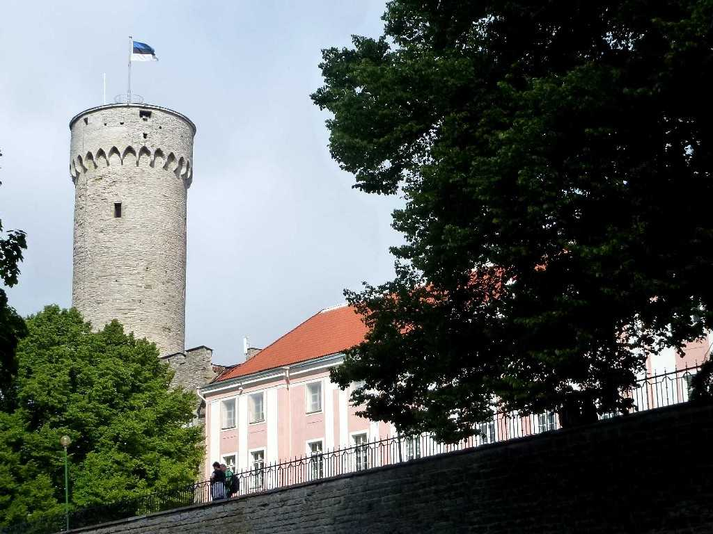
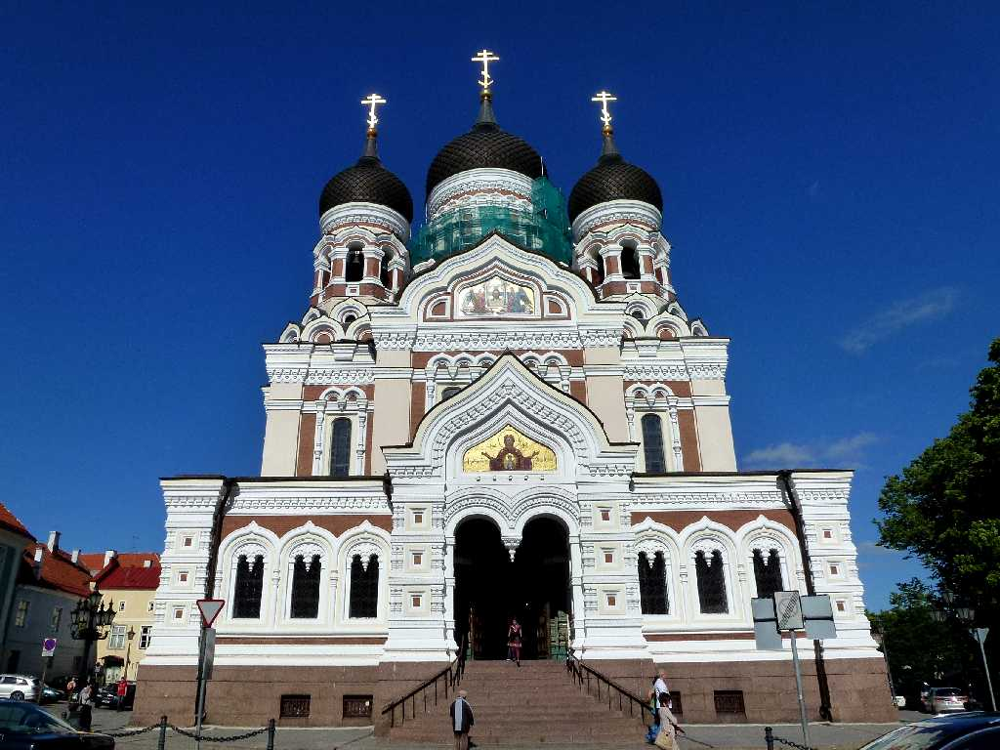
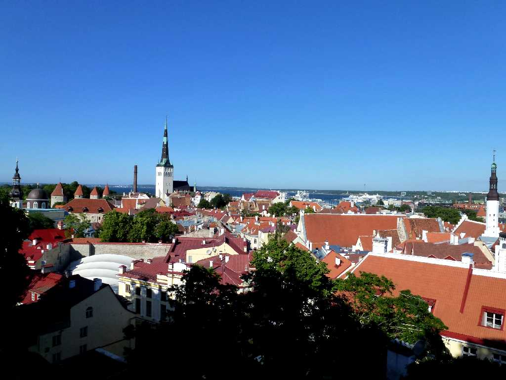
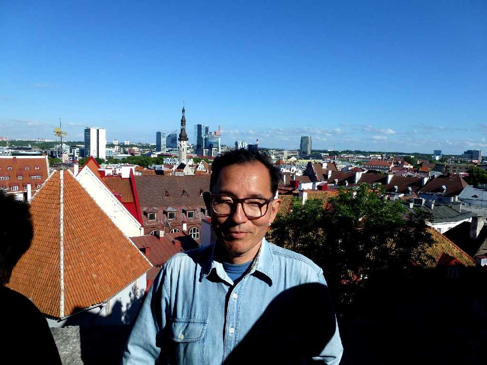

Pikk Hermann Toompea Castle Tallinn
１２２９年騎士団がトームペアの丘に創ったトームペア城で１８世紀には女帝エカテリーナが改築し現在国会議事堂となっている

Alexander Nevsky Cathedral Tallinn
１９０１年にロシア皇帝アレクサンダーⅢ世が創ったロシア正教のアレクサンダーネフスキー大聖堂

North Tallinn from East Toompea
トームペアの東端からタリン旧市街を望む

July 2 2012 South Tallinn from East Toompea